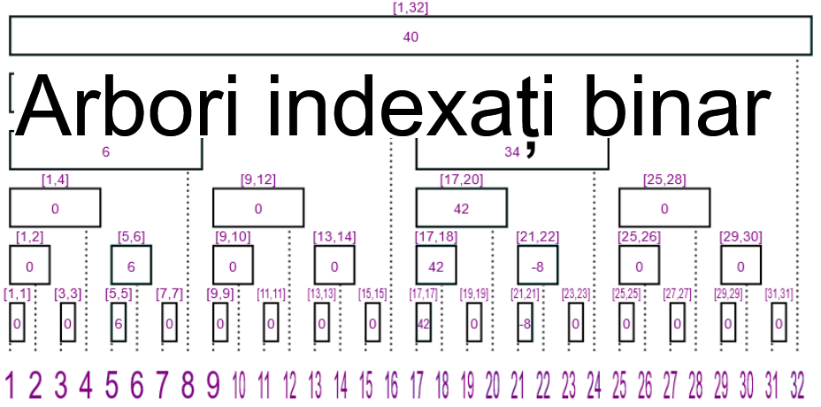

Arborii indexați binari (numiți în literatură și Arbori Fenwick) sunt o structură de date utilă care poate stoca "dinamic" sumele pe prefix/sufix. Aceasta a fost concepută de Boris Ryabko în 1989 și publicată în 1992, dar este cunoscută sub numele lui Peter Fenwick care a descris-o în articolul său din 1994. Spre deosebire de alte structuri de date mai versatile precum arborii de intervale, arborii Fenwick sunt foarte ușor de implementat și rulează mai rapid deoarece nu necesită noduri suplimentare. În continuare ne vom referi la arborii indexați binar prin AIB și vom studia varianta acestora pentru actualizare pe sufix, interogare pe prefix. Acest software educațional are scopul de a explica modul în care funcționează un AIB, reprezentarea sa grafică, precum și fundamentele sale matematice. Secțiunile sunt următoarele: